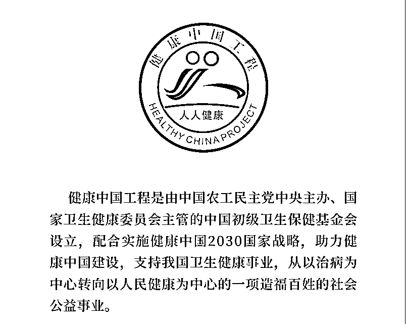
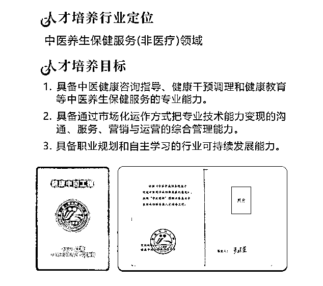
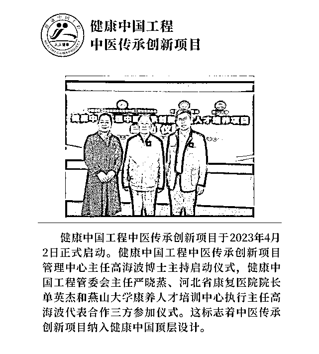
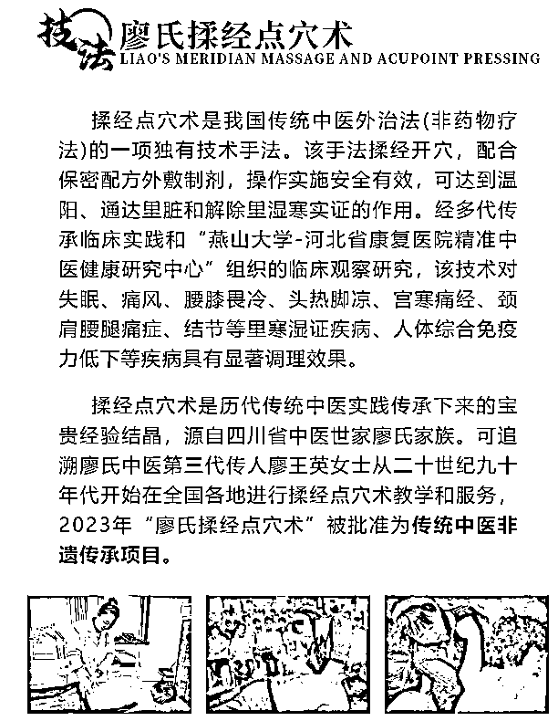
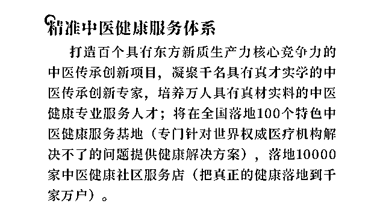

来源：https://tey1bi2rk7.feishu.cn/docx/CCRgd19lhot3urxEYGNcJUk3nGg
一、运营商赛道的启始
去年和今年一直在本地运营商的赛道里做，预期还可以，这个赛道基本是传统的代理商在做，很多人深耕几十年，在营销上没有创新点，守店的老板更是不舍得出让利润，我们调查清楚后设计了大额分钱的机制，及时分钱，迅速拓展了本地市场以及很多异业合作点。在这个基础上，通过生财的航海，做了线上的运营，主要是小红书的企业号，那时候本地没人做，迅速组织了10个号，每天都有几名客户办理业务，加上线下渠道的及时分钱办理机制。
当时加上商圈和对赌，都能拿到较高的佣金，甚至是套餐金额的十几倍，由于拿到了结果，想在其他城市快速复制。
二、缘何终止
运营商比较吃大环境政策，由于移动联通电信三大巨头限制携转后，能够给客户的优惠降低，业务操作难度迅速加大，业务量开始下滑。在苦尝无果后，寻找新的赛道进行转型。
三、为什么做大健康
在生财上看到很多圈友在大健康行业拿到了很多结果，包含养生茶，养生书，养生套餐，头疗，线上健康处方等拿到好的结果，心里痒痒的很，又没有纯线上的运营经验，一直没有行动。就这么边看，边选，边拖着，期间也接触了一些其他的项目，都没有躬身全力入局，这个时候想起了亦仁大大说的，百看不如一练，越看越焦虑，越看越损耗自己的心力。
自己安慰自己，一切都是最好的安排，恰逢我所在的城市，河北省秦皇岛市被定位中医传承创新示范市，我感觉机会来了，迅速通过关系联络周边的资源，顺着资源线爬，这个是燕山大学牵头组织来做，正好有认识的老师，还是课题组的，有科研成果，亟待市场化，就这样我在2024年的5月份决定全力开搞。
四、定义项目内容
与燕山大学的教授一拍即合，迅速组建团队，用自己多年积累的运营经验，将项目重新定义重点，从品牌，产品与技术，渠道，服务四个维度进行了全方位的梳理。通过梳理，定义市场模式，火速开搞。
赛道-大健康行业-中医领域-强实效型中医健康服务
解决问题：疼痛、失眠、痛风，这三类人群在全国叠加也有5亿目标客户，项目天花板高，可以用心搞。具备刚需，高频，海量特征。
①品牌：
1.健康中国中医传承创新项目，健康中国工程是和希望工程平级的单位，由新农合的提出者民工党主席严部长牵头落实，人人健康的理念。

2.燕山大学康养产业技术研究院负责项目的科研，临床，孵化。
3.燕山大学康养产业人才培训中心负责项目人才的培训，颁发中医传承创新人才证书，全国通用。

4.河北省康复医院负责技术、产品的临床测试。

5.非遗传承技术：揉经点穴术

6.燕山大学国家科技园负责项目的孵化和落地。
在品牌上，我觉得这些已经足够，迅速投入精力，将民间中医的技术标准化，产品标准化，临床化，取得了非常显著客观的成果，有效率在95%以上，大大超出了我的预期。这个项目的根扎稳了。

②产品与技术
里阳霜系列产品，中医外治法，绿色疗法，通过中医的“木佐金使，逆阳破卫”的原理，是古阳灸的现代传承，无色，无味，无烟，涂抹即可。用到了中医六艺中的药和灸。能够深层次去除身体的里寒湿症，快速解决疼痛，失眠，痛风，月子病，手脚凉，各类腰腿痛，尤其是刚刚扭伤挫伤的客户，一次见效，口碑传播。
产品的效果会说话是一个项目能够长期存活的关键点，行业口头禅：我哪里懂运营，全靠产品好。
技术是民间中医廖老师多代传承的揉经点穴术，最早可以追溯到清代。
我们将技术标准化后具有高效的特征，将传统理疗店的技术老师从劳动工种脱离出来，实现了快速调理，随调随走。用到了中医六艺中的：针（以指代针）、按跷、导引。
关节1分钟调理，肩颈3分钟调理，后背10分钟调理，随调随走。
1分钟体感效果，12小时持久有效，效果是传统的艾灸、按摩、经络的10倍以上。
技术手法上以燕山大学康养产业人才培训中心负责培训，打造人才供应链，3天即可学会调理。项目能否放大取决于能否快速复制，标准化复制。
通过上述我们把项目定义为：为一亿家庭解决疼痛和失眠问题
3️⃣ 渠道
渠道通过不断的摸索，我们筛选出三类人可以做这个项目
1、想要自己和家人身体健康的
2、想学习一份可以安身立命技术的人群，一双手就是一家调理馆，不需要复杂的技术，随时随地可以帮助客户调理祛除疼痛。
3、想要做项目并无限放大的人群，以利益和利润为中心迅速扩大项目，实现稳定可靠的收益。
把渠道又细分了下
1、代理渠道，以空间地盘和核心
2、店中店渠道，传统理疗店、月子会所，美容店加能解决问题的调理项目
3、社区店板块，以社区为中心来开，成本低，人群广
店的模型：1家店，2个人，3张床，40平米，5大赋能，60天回本。
4、农村乡镇点板块，将市场下沉，农村包围城市，农村店的试点我们去考察，一天调理30-40人，很广泛。
5、大的渠道合作板块，原有的微商和各类团队合作板块。
4️⃣ 服务
提供陪跑服务。
五、大健康如何放大
在这个行业处于摸索阶段，通过这段时间的积累落地了几名代理和10家门店，虽然不快，但是看到这些客户调理好后的反应心里还是非常的有成就感，和做以往的行业有很大不同，能够和客户链接。
在具体如何放大这个方面还没有更好的办法，需要各位圈友的帮助与合作。
1、新媒体的合作
2、渠道的合作
3、运营的合作
希望能够吸取大家宝贵的意见，将真中医，真技术，真产品，真效果，真口碑的好项目惠及更多有需要的人群。